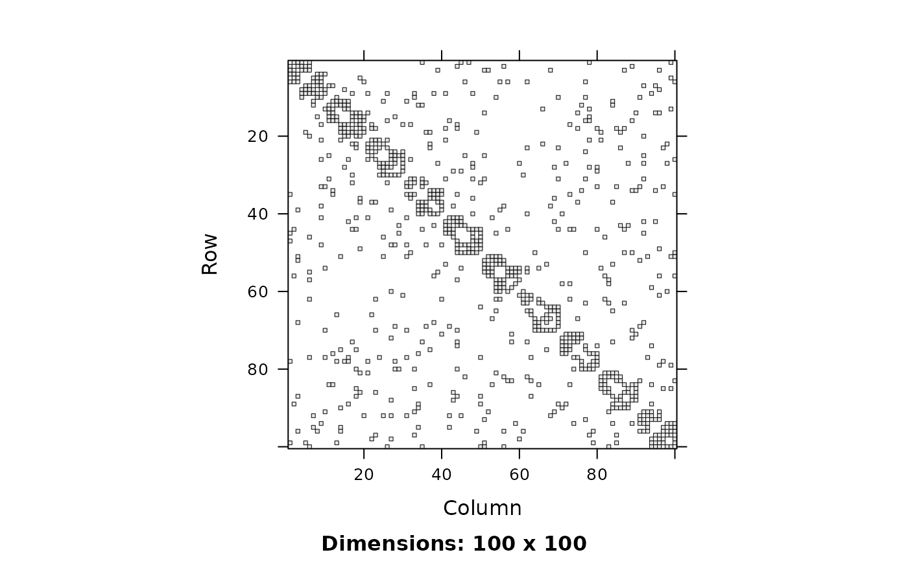

Sampling from a hierarchical stochastic block model of networks.
Arguments
- n
Integer scalar, the number of vertices.
- m
Integer scalar, the number of vertices per block.
n / mmust be integer. Alternatively, an integer vector of block sizes, if not all the blocks have equal sizes.- rho
Numeric vector, the fraction of vertices per cluster, within a block. Must sum up to 1, and
rho * mmust be integer for all elements of rho. Alternatively a list of rho vectors, one for each block, if they are not the same for all blocks.- C
A square, symmetric numeric matrix, the Bernoulli rates for the clusters within a block. Its size must mach the size of the
rhovector. Alternatively, a list of square matrices, if the Bernoulli rates differ in different blocks.- p
Numeric scalar, the Bernoulli rate of connections between vertices in different blocks.
- ...
Passed to
sample_hierarchical_sbm().
See also
Random graph models (games)
bipartite_gnm(),
erdos.renyi.game(),
sample_(),
sample_bipartite(),
sample_chung_lu(),
sample_correlated_gnp(),
sample_correlated_gnp_pair(),
sample_degseq(),
sample_dot_product(),
sample_fitness(),
sample_fitness_pl(),
sample_forestfire(),
sample_gnm(),
sample_gnp(),
sample_grg(),
sample_growing(),
sample_islands(),
sample_k_regular(),
sample_last_cit(),
sample_pa(),
sample_pa_age(),
sample_pref(),
sample_sbm(),
sample_smallworld(),
sample_traits_callaway(),
sample_tree()
Author
Gabor Csardi csardi.gabor@gmail.com
Examples
## Ten blocks with three clusters each
C <- matrix(c(
1, 3 / 4, 0,
3 / 4, 0, 3 / 4,
0, 3 / 4, 3 / 4
), nrow = 3)
g <- sample_hierarchical_sbm(100, 10, rho = c(3, 3, 4) / 10, C = C, p = 1 / 20)
g
#> IGRAPH 923b8d2 U--- 100 467 -- Hierarchical stochastic block model
#> + attr: name (g/c), m (g/n), rho (g/n), C (g/n), p (g/n)
#> + edges from 923b8d2:
#> [1] 1-- 2 1-- 3 2-- 3 1-- 4 3-- 4 1-- 5 2-- 5 1-- 6 2-- 6 4-- 7
#> [11] 4-- 8 6-- 8 5-- 9 6-- 9 5--10 6--10 7-- 8 7-- 9 8-- 9 7--10
#> [21] 8--10 9--10 11--12 11--13 12--13 12--14 13--15 12--16 13--16 14--17
#> [31] 15--17 14--18 15--18 16--18 14--19 16--19 14--20 15--20 17--19 17--20
#> [41] 18--20 19--20 21--22 21--23 22--23 22--24 23--24 21--25 22--25 23--25
#> [51] 21--26 22--26 23--26 24--27 25--27 26--27 24--28 26--28 25--29 24--30
#> [61] 25--30 26--30 27--28 27--29 28--29 27--30 29--30 31--32 31--33 32--33
#> [71] 32--34 33--34 32--35 33--35 32--36 33--36 34--37 35--37 36--37 35--38
#> + ... omitted several edges
library("Matrix")
image(g[])
